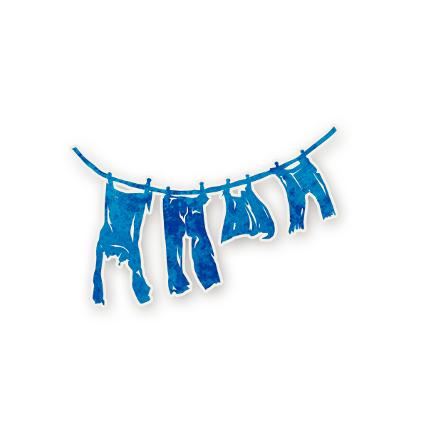
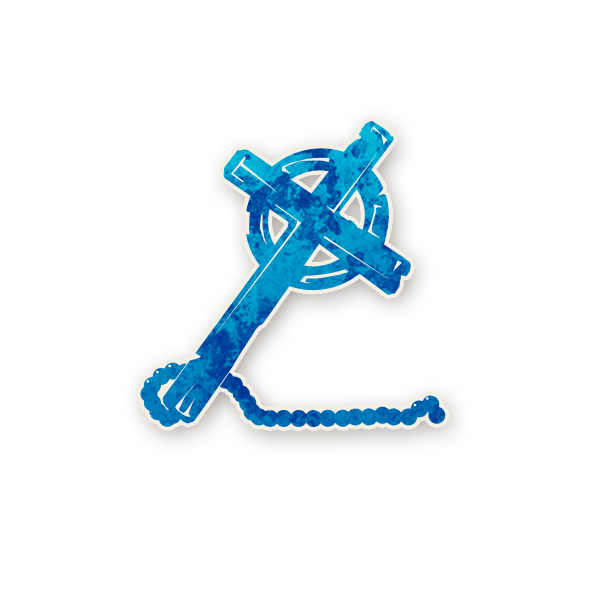
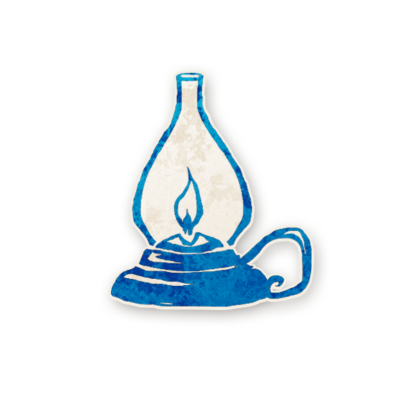
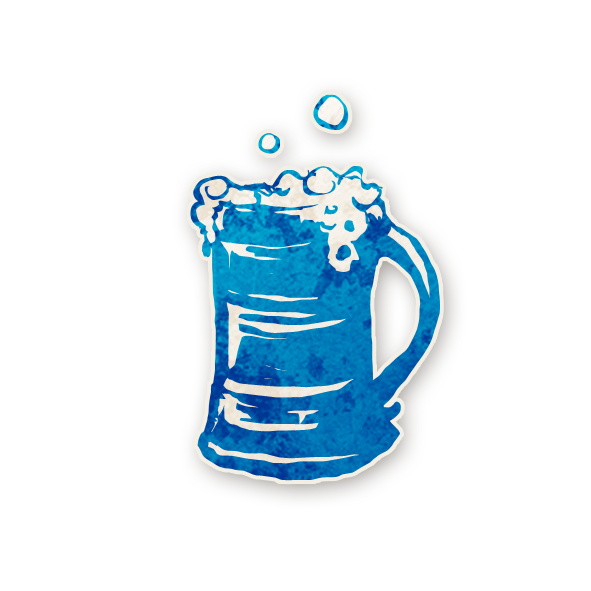

Karakter açıklamasını görmek için dokunmaya devam et
Kasaba Halkı (Townsfolk)

Çamaşırcı Kadın (Washerwoman)
Kütüphaneci (Librarian)
Müfettiş (Investigator)
Aşçı (Chef)
Empat (Empath)
Falcı (Fortune Teller)
Mezarcı (Undertaker)

Derviş (Monk)
Karga Gözcüsü (Ravenkeeper)
Masum (Virgin)
Avcı (Slayer)
Asker (Soldier)
Belediye Başkanı (Mayor)
Dışlananlar (Outsiders)
Uşak (Butler)

Münzevi (Recluse)
